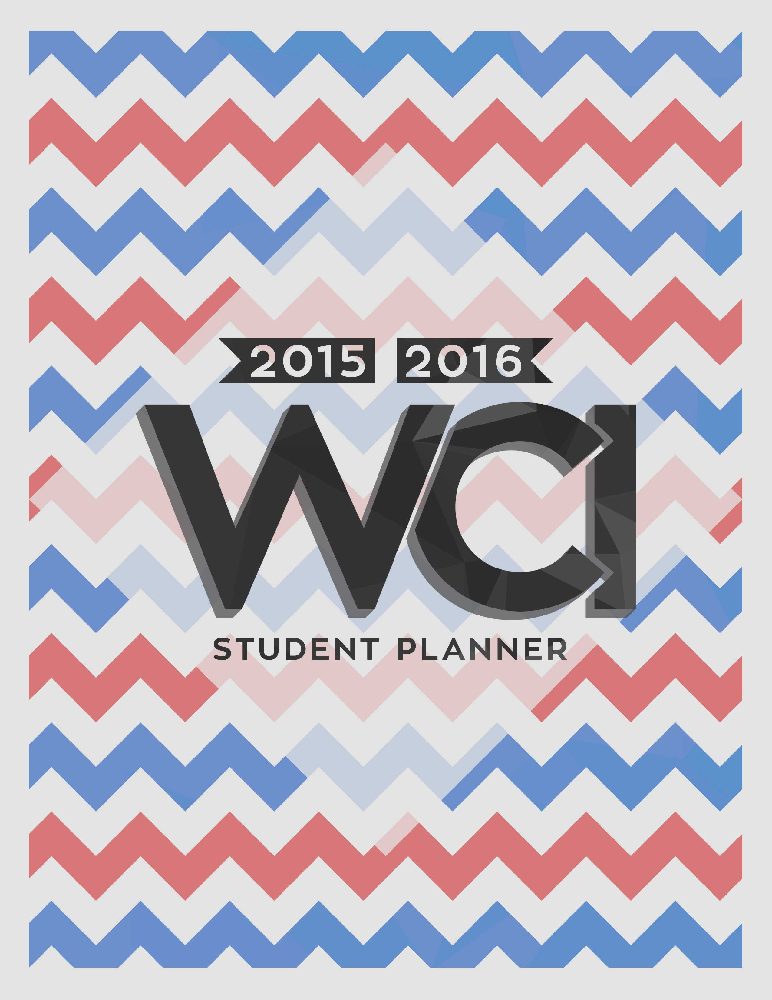
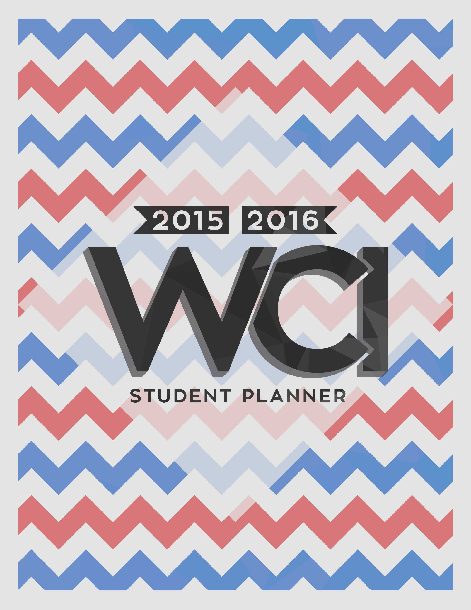

Planner Covers
In grade 11, I was asked to design the front and back covers for the 2014-2015 planner. This meant a lot to me because I only started my journey into design at the start of that very year, and being asked to create something to be used by every teacher and student at the school was a pretty great milestone.
My school colours were blue, red and white, which were rather difficult to work with. The main challenge was finding a way to weigh them equally, since each of those colours represents a different aspect of school life-activities, athletics and academics-and the ideal student would be well-represented in all of these areas.
My designs were well receieved, so even after I graduated, I was asked to make the following year's covers as well. I went for a more symbolic pattern, formed by a series of connected W's, as well as a more clean type. I'm happy with how both years' covers turned out, and I'm glad to have made a meaningful contribution to my school.